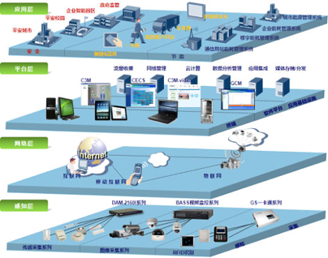
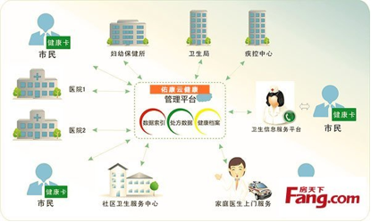
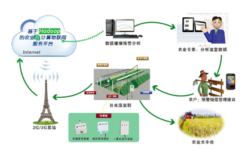
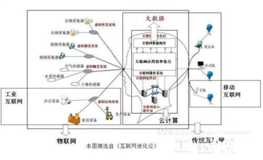

应用场景

智慧城市
智慧城市通过物联网基础设施、云计算基础设施、地理空间基础设施等新一代信息技术以及工具和方法的应用，实现全面透彻的感知、宽带泛在的互联、智能融合的应用以及以用户创新、开放创新、大众创新、协同创新为特征的可持续创新。从技术发展的视角，智慧城市建设要求通过以移动技术为代表的物联网、云计算等新一代信息技术应用实现全面感知、泛在互联、普适计算与融合应用。

智慧医疗
智慧医疗是一套融合物联网、云计算与大数据处理技术的新型解决方案。智慧医疗以“感、知、行" 为核心, 旨在建立一个智能的远程疾病预防与护理平台。“感" 即以物联网技术为基础，利用多种传感器实时跟踪各种重命体征数据并通过无线网络技术传送到医疗数据中心；“知“即利用大数据存储与处理平台，应用数据挖掘和知识发现理论对医疗历史数据进行建模与分析；“行”即将实时跟踪与历史数据的分析结果, 通过云服务的方式提供给医务人员作为诊疗参考, 或为终端用户直接提供医疗护理方案。

智能农业
利用物联网、云计算、移动互联网、车联网、手机、平板电脑、PC 以及遍布地球各个角落的各种各样的传感器作为信息载体，使用专业技术进一步挖掘分析农业大数据，发现隐藏于背后的规律，从而实现农业生产环境的智能预警、智能决策、智能分析。

工业4.0
工业4.0或工业互联网本质上是互联网运动神经系统的萌芽，互联网中枢神经系统也就是云计算中的软件系统控制工业企业的生产设备，家庭的家用设备，办公室的办公设备，通过智能化，3D打印，无线传感等技术使的机械设备成为互联网大脑改造世界的工具。同时这些智能制造和智能设备也源源不断向互联网大脑反馈大数据数，供互联网中枢神经系统决策使用。